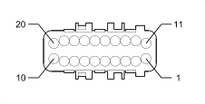

D079 TRANSMISSION SENSORS COUPLING (FRONT)
- Path
- Electrical equipment > 3 CONNECTORS > D INTERMEDIATE COUPLINGS > D079 TRANSMISSION SENSORS COUPLING > D079 TRANSMISSION SENSORS COUPLING (FRONT)
- Kind
- connector pinout (pin -> wire colour -> other end)
- Applies to
- engines: 1.2 8v; all production periods; only with equipment: Smart gearbox
- Interactive page
- https://sloeber94.github.io/elrnDB-fPnd/en/#/169003118
Applies to: engines: 1.2 8v; all production periods; only with equipment: Smart gearbox

Wiring | Colour |
|---|---|
NERO (black) |
Pin | Cable | Destination | |||
|---|---|---|---|---|---|
Sec.. | Colour | Node | Connect. | Pin | |
1 | 1,5 | NZ (black with violet stripe) | 24 | ||
2 | 0,75 | BG (white with yellow stripe) | 29 | ||
5 | 0,35 | NV (black with green stripe) | 66 | ||
6 | 0,35 | MN (brown with black stripe) | 40 | ||
7 | 0,5 | AV (light blue with green stripe) | 52 | ||
8 | 0,5 | W | 59 | ||
9 | 0,5 | N (black) | 9 | ||
10 | 0,75 | BV (white with green stripe) | 32 | ||
11 | 0,75 | HN (grey with black stripe) | 43 | ||
14 | 0,35 | HR (grey with red stripe) | 39 | ||
15 | 0,35 | SV (pink with green stripe) | 51 | ||
16 | 0,35 | SR (pink with red stripe) | 73 | ||
17 | 0,5 | CB (orange with white stripe) | 79 | ||
18 | 0,5 | B (white) | 38 | ||
19 | 0,5 | H (grey) | 50 | ||
20 | 0,75 | AR (light blue with red stripe) | 44 | ||